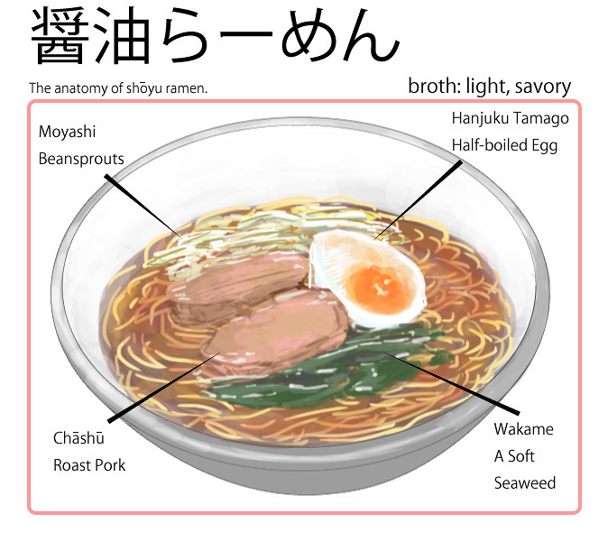
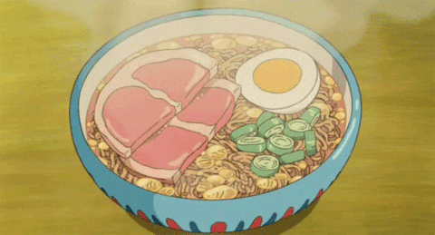

Shoyu Ramen
Description
Shoyu Ramen: A flavorful and savory ramen dish featuring a soy sauce-based broth that is simmered with various ingredients. The key components of Shoyu Ramen include tender chashu (braised pork slices), fragrant green onions, bamboo shoots, and a seasoned boiled egg.
Ingredients
- Shoyu Ramen broth
- Chashu (braised pork slices) 🐷
- Green onions 🧅
- Bamboo shoots 🎍
- Seasoned boiled egg 🥚
- Naruto fish cake (a type of fish cake with a pink spiral design) 🐟🍰
- Nori (seaweed) 🌿
- Shoyu tare (soy sauce seasoning) 🥢
Steps
Steps
- Prepare the Shoyu Ramen broth by simmering a combination of soy sauce, chicken or pork stock, and aromatics for a rich and savory flavor. 🍲
- Cook the chashu (braised pork slices) until tender and slice them into thin pieces. 🐷
- Finely chop the green onions. 🧅
- Drain and slice the bamboo shoots into bite-sized pieces. 🎍
- Prepare seasoned boiled eggs by simmering them in a mixture of soy sauce, mirin, and water. Peel and halve the eggs. 🥚
- Gently heat the Naruto fish cake in the broth to warm it. 🐟🍰
- Prepare the nori (seaweed) by cutting it into thin strips. 🌿
- Cook the ramen noodles according to the package instructions. 🍜
- Assemble the Shoyu Ramen by placing the cooked noodles in a bowl, adding the chashu, green onions, bamboo shoots, seasoned boiled egg, Naruto fish cake, and nori. Pour the hot Shoyu Ramen broth over the ingredients. 🍜
The Shoyu Ramen is now ready to be served
